| 1. | 2. 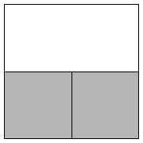 | 3. 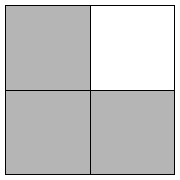 | ||
| s = 1 Trivial. | s = 2 Proved by Frits Göbel in 1979. | s = 2 Proved by Frits Göbel in 1979. |
| 4. | 5. 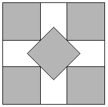 | 6. 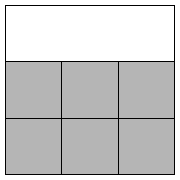 | ||
| s = 2 Trivial. | s = 2 + 1 / √2 = 2.707+ Proved by Frits Göbel in 1979. | s = 3 Proved by Michael Kearney and Peter Shiu in April 2002. |
| 7. 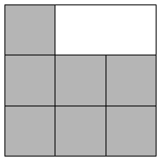 | 8. 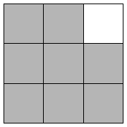 | 9.
| ||
| s = 3 Proved by Erich Friedman in 1999. | s = 3 Proved by Erich Friedman in 1999. | s = 3 Trivial. |
10.
| 11. 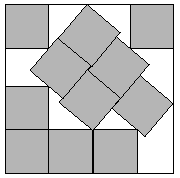 | 14. 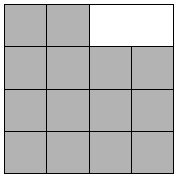 | ||
| s = 3 + 1 / √2 = 3.707+ Proved by Walter Stromquist in 2003. | s = 3.877+ Found by Walter Trump in 1979. | s = 4 Proved by Erich Friedman in 1999. |
| 15. 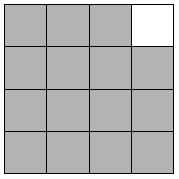 | 17.
| 18. 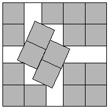 | ||
| s = 4 Proved by Erich Friedman in 1999. | s = 4.675+ Found by John Bidwell in 1997. | s = (7 + √7) / 2 = 4.822+ Found by Pertti Hamalainen in 1979. |
| 19. 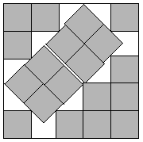 | 24. 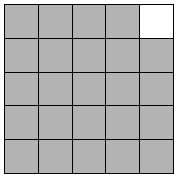 | 26. 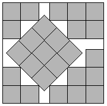 | ||
| s = 3 + 4 √2 / 3 = 4.885+ Found by Robert Wainwright in 1979. | s = 5 Proved by Erich Friedman in 1999. | s = 7 / 2 + 3 / √2 = 5.621+ Found by Erich Friedman in 1997. |
| 27. 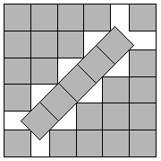 | 28. 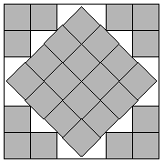 | 29. 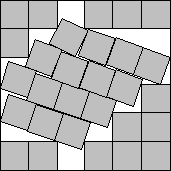 | ||
| s = 5 + 1 / √2 = 5.707+ Found by Frits Göbel in 1979. | s = 3 + 2 √2 = 5.828+ Found by Frits Göbel in 1979. | s = 5.934+ Found by Thierry Gensane and Philippe Ryckelynck in April 2004. |
| 37. 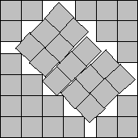 | 38. 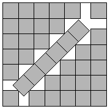 | 39. 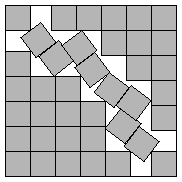 | ||
| s = 6.598+ Found by David W. Cantrell in September 2002. | s = 6 + 1 / √2 = 6.707+ Found by Frits Göbel in 1979. | s = 6.818+ Found by David W. Cantrell in August 2002. |
| 40. 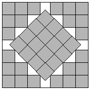 | 41. 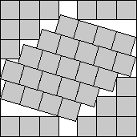 | 50. 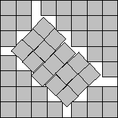 | ||
| s = 4 + 2 √2 = 6.828+ Found by Frits Göbel in 1979. | s = 6.937+ Found by Joe DeVincentis in April 2014. | s = 7.598+ Found by David W. Cantrell in September 2002. |
| 51. 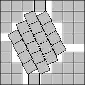 | 52. 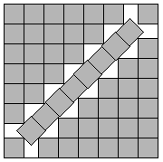 | 53.
| ||
| s = 7.704+ Found by Károly Hajba in July 2009. | s = 7 + 1 / √2 = 7.707+ Found by Frits Göbel in 1979. | s = 5 + 2 √2 = 7.823+ Found by David W. Cantrell in in September 2002. |
| 54. 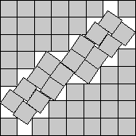 | 55. 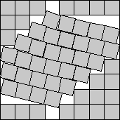 | 65. 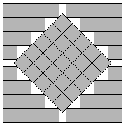 | ||
| s = 7.846+ Found by Joe DeVincentis in April 2014. | s = 7.954+ Found by Joe DeVincentis in April 2014. | s = 5 + 5 / √2 = 8.535+ Found by Frits Göbel in 1979. |
| 66. 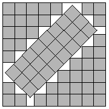 | 67. 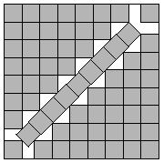 | 68.
| ||
| s = 3 + 4 √2 = 8.657+ Found by Evert Stenlund in 1980. | s = 8 + 1 / √2 = 8.707+ Found by Frits Göbel in 1979. | s = 15/2 + √7/2 = 8.822+ Found by David W. Cantrell in September 2002. |
| 69. 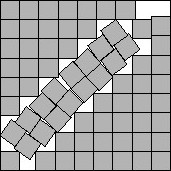 | 70. 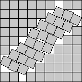 | 71. 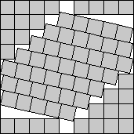 | ||
| s = 8.828+ Found by Maurizio Morandi in June 2010. | s = 8.881+ Found by Joe DeVincentis in April 2014. | s = 8.960+ Found by Joe DeVincentis in April 2014. |
| 82. 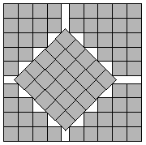 | 83. 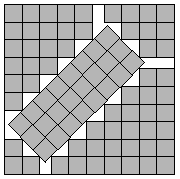 | 84. 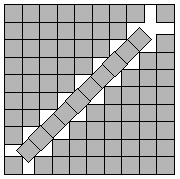 | ||
| s = 6 + 5 / √2 = 9.535+ Found by Frits Göbel in 1979. | s = 4 + 4 √2 = 9.657+ Found by Evert Stenlund in 1980. | s = 9 + 1 / √2 = 9.707+ Found by Frits Göbel in 1979. |
| 85. 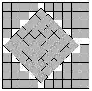 | 86. 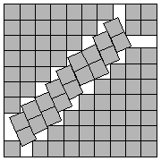 | 87. 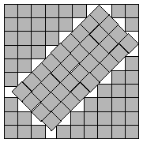 | ||
| s = 11 / 2 + 3 √2 = 9.742+ Found by Erich Friedman in 1997. | s = 17 / 2 + √7 / 2 = 9.822+ Found by Erich Friedman in 1997. | s = 9.851+ Found by David W. Cantrell in August 2002. |
| 88. 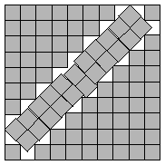 | 89. 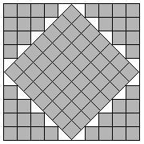 | |
| s = 9.901+ Found by David W. Cantrell in August 2002. | s = 5 + 7 / √2 = 9.950+ Found by Evert Stenlund in 1980. |
For more details, see my paper on the subject:
Packing Unit Squares in Squares: A Survey and New Results.